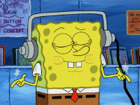

Me gusta jugar futbol, en mis tiempos libres, con mis amigos de por mi casa, salgo a jugar me ayuda mucho para olvidar un poco el estrés.
Me gusta escuchar música todo el día,cuando hago tarea o cuando voy a correr, o simplemente cuando estoy en mi casa siempre estoy escuchando musica, me ayuda a sentirme mejor, tengo muchos géneros musicales que me gustan, en especial el pop en ingles, trap y salsa. Pero en general mi canción favorita es la de Monaco de Bad bunny
